Глава 1. БЫТИЕ
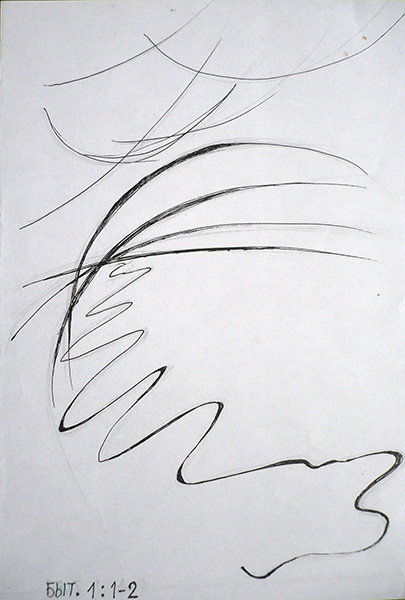1. В начале сотворил Бог небо и землю.
2. Земля же была безвидна и пуста, и тьма над бездною.
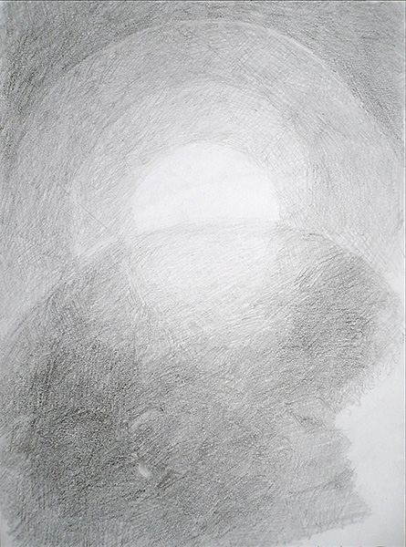
3. И сказал Бог: да будет свет. И стал свет.
4. И увидел Бог свет, что он хорош; и отделил Бог свет от тьмы.
5. И назвал Бог свет днём, а тьму ночью. И был вечер, и было утро: день один.
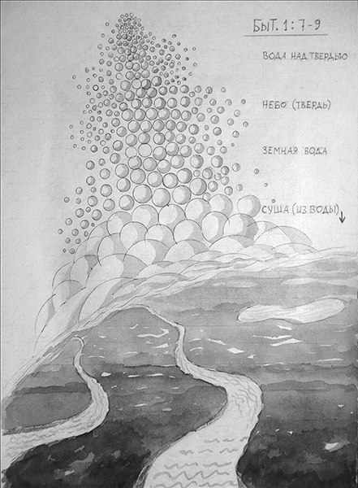
И создал Бог твердь; и отделил воду, которая под твердью, от воды, которая над твердью. И стало так.
8. И назвал Бог твердь небом. И был вечер, и было утро: день вторый.
9. И сказал Бог: да соберется вода, которая под небом, в одно место, и да явится суша. И стало так.
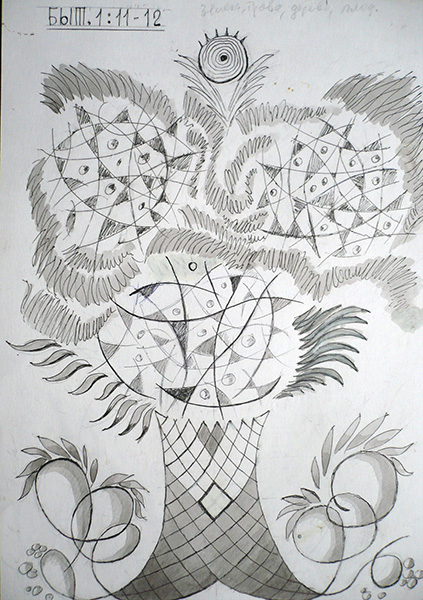
11. И сказал Бог: да произрастит земля зелень, траву, сеющую семя, дерево плодовитое, приносящее по роду своему плод, в котором семя его на земле. И стало так.
12. И произвела земля зелень, траву, сеющую семя по роду её, и дерево, приносящее плод, в котором семя его по роду его. И увидел Бог, что это хорошо.
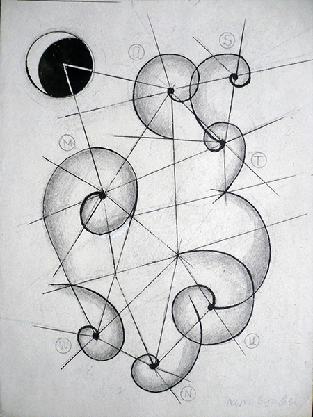
14. И сказал Бог: да будут светила на тверди небесной, для отделения дня от ночи, и для знамений и времён, и дней, и годов;
15. И да будут они светильниками на тверди небесной, чтобы светить на землю. И стало так.
16. И создал Бог два светила великие: светило большее, для управления днём, и светило меньшее, для управления ночью,и звёзды.
17. И поставил их Бог на тверди небесной, чтобы светить на землю.
18. И управлять днём и ночью, и отделять свет от тьмы. И увидел Бог, что это хорошо.
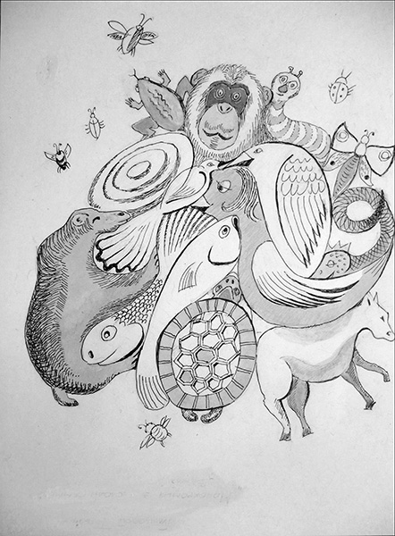
24. И сказал Бог: да произведёт земля душу живую по роду её, скотов, и гадов, и зверей земных по роду их. И стало так.
25. И создал Бог зверей земных по роду их, и скот по роду его, и всех гадов земных по роду их. И увидел Бог, что это хорошо.
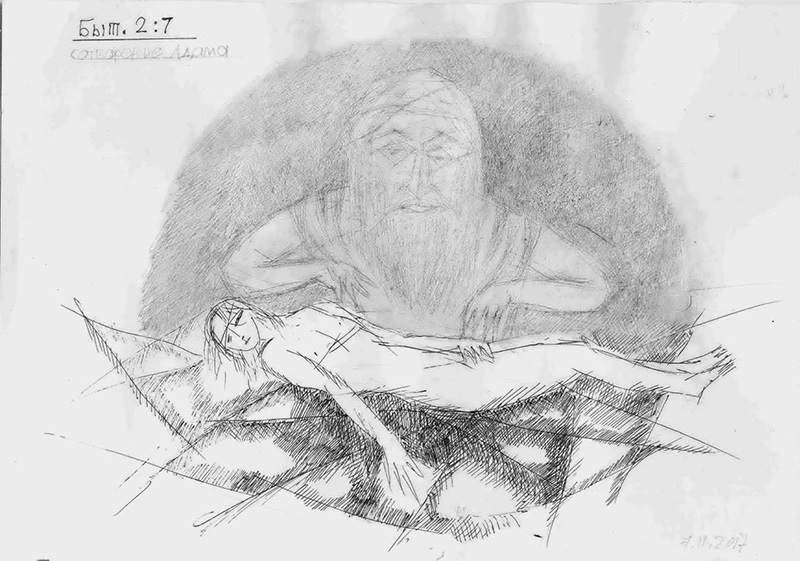
26. И сказал Бог: сотворим человека по образу Нашему, по подобию Нашему; и да владычествуют они над рыбами морскими, и над птицами небесными, и над скотом, и над всею землёю, и над всеми гадами, пресмыкающимися на земле.
27. И сотворил Бог человека по образу Своему, по образу Божию сотворил его; мужчину и женщину сотворил их.
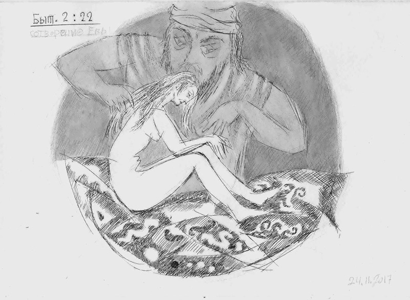
Глава 3
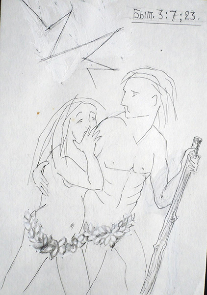
7. И открылись глаза у них обоих, и узнали они, что наги, и сшили смоковные листья, и сделали себе опоясания.
23. И выслал его Господь Бог из сада Едемского, чтобы возделывать землю, из которой он взят.
24. И изгнал Адама, и поставил на востоке у сада Едемского херувима и пламенный меч обращающийся, чтобы охранять путь к дереву жизни.
Глава 4
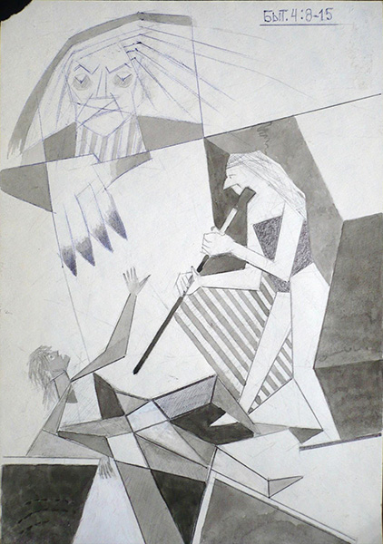
8. …И когда они были в поле, восстал Каин на Авеля, брата своего, и убил его.
9. И сказал Господь Каину: где Авель, брат твой? Он сказал: не знаю; разве я сторож брату моему?
10. И сказал: что ты сделал? Голос крови брата твоего вопиет ко мне от земли.
11. И ныне проклят ты от земли, которая отверзла уста свои принять кровь брата твоего от руки твоей.
Глава 7
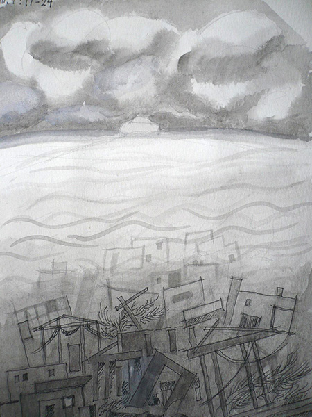
12. И лился на землю дождь сорок дней и сорок ночей.
19. И усилилась вода на земле чрезвычайно, так что покрылись все высокие горы, какие есть под всем небом.
23. Истребилось всякое существо, которое было на поверхности земли; от человека ло скота, и гадов, и птиц небесных, всё истребилось с земли: остался только Ной, и что было с ним в ковчеге.
Глава 11
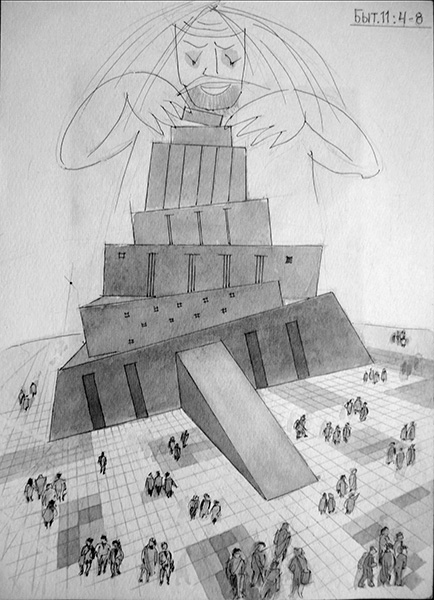
4.И сказали они: построим себе город и башню, высотою до небес; и сделаем себе имя, прежде нежели рассеемся по лицу всей земли.
8. И рассеял их Господь оттуда по всей земле; и они перестали строить город.
Глава 32
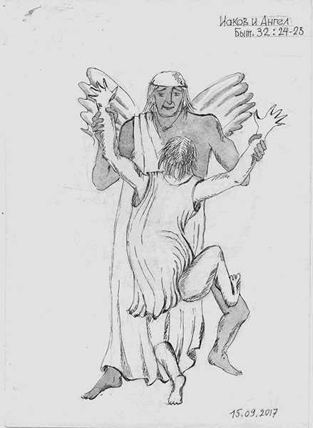
24. И остался Иаков один. И боролся Некто с ним, до появления зари;
25. И, увидев, что не одолевает его, коснулся состава бедра его, и повредил состав бедра у Иакова, когда он боролся с Ним.
26. И сказал: отпусти Меня; ибо взошла заря. Иаков сказал: не отпущу Тебя, пока не благословишь меня.
27. И сказал: как имя твоё? Он сказал: Иаков.
28. И сказал: отныне имя тебе будет не Иаков, а Израиль; ибо ты боролся с Богом, и человеков одолевать будешь.
Глава 22
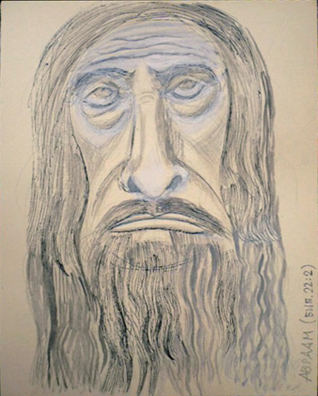
2. Бог сказал: возьми сына твоего, единственного твоего, которого ты любишь Исаака; и пойди в землю Мориа, и там принеси его во всесожжение на одной из гор, о которой Я скажу тебе.
Глава 39

7. И обратила взоры на Иосифа жена господина его, и сказала: спи со мною.
8. Но он отказался…
11. Случилось в один день, что он вошёл в дом делать дело своё, и никого из домашних тут в доме не было;
12. Она схватила его за одежду его и сказала: ложись со мною. Но он, оставив одежду свою в руках её, побежал, и выбежал вон.
1-я ЦАРСТВ
Глава 17
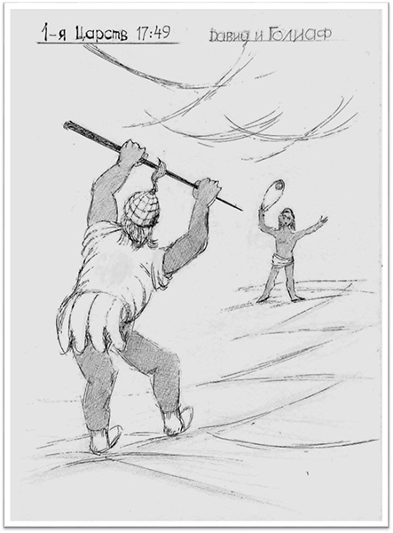
49. И опустил Давид руку свою в сумку, и взял оттуда камень, и бросил из пращи, и поразил Филистимлянина в лоб, так что камень вонзился в лоб его, и он упал лицем на землю.
Глава 18
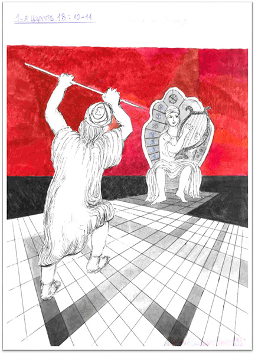
10. И было на другой день: напал злой дух от Бога на Саула, и он бесновался в доме своём, а Давид играл рукою своею на струнах, как и в другие дни; в руке у Саула было копьё.
11. И бросил Саул копьё, подумав: пригвожду Давида к стене. Но Давид два раза уклонился от него.
Книга судей
Глава 16

19. И усыпила его Далида на коленах своих, и призвала человека, и велела ему остричь семь кос головы его. И начал он ослабевать, и отступила от него сила его.
Бытие
Глава 13
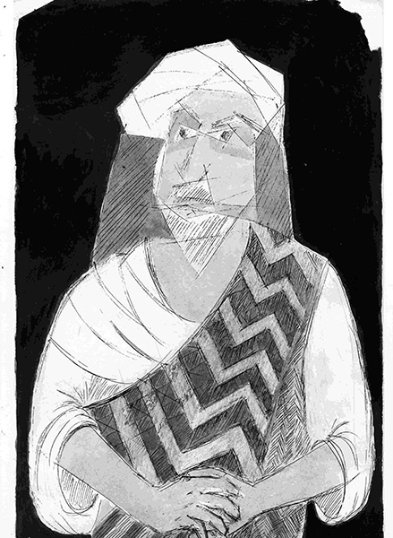
14. И сказал Господь Аврааму:…возведи очи твои,…и посмотри к северу, и к югу, и к востоку, и к западу.
15. Ибо всю землю, которую ты видишь, тебе дам Я и потомству твоему навеки.
Л. Миронова,
03.04.2017